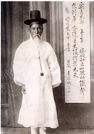
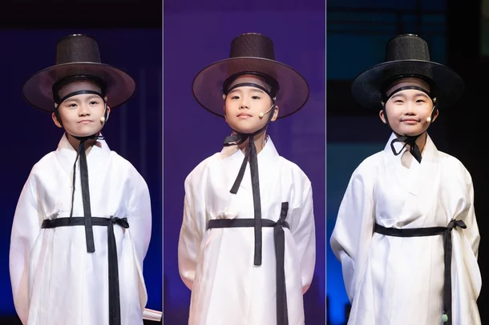
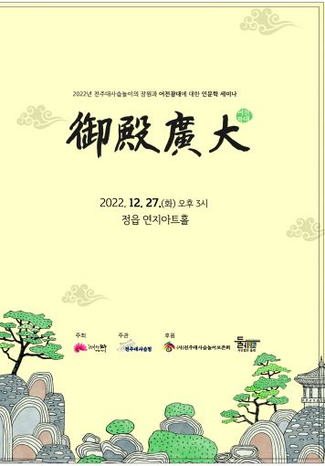
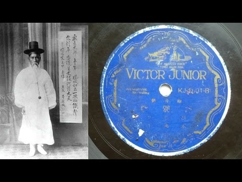
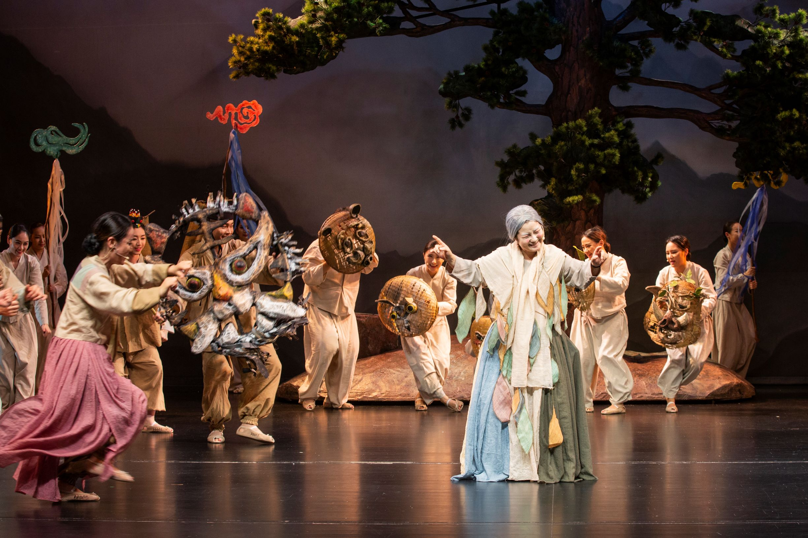
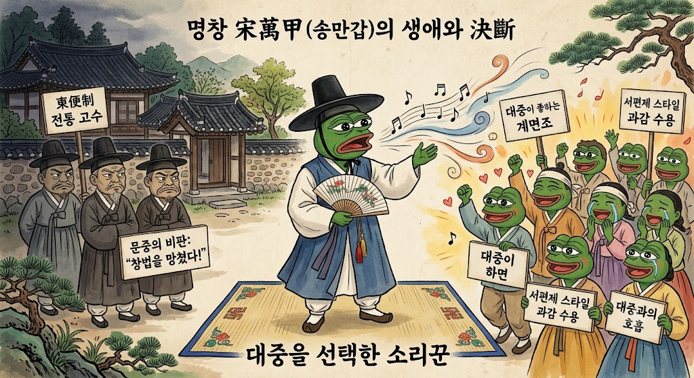

동편제 판소리 명창 송만갑은 전남 구례 출신으로 알려져 있음
출생연도는 1865년으로 대충 추측됨
집안부터가 보통이 아니었음
할아버지는 명창 송광록, 아버지는 명창 송우룡이었는데
여기에 송광록의 형이 그 유명한 가왕 송흥록이었으니,
송만갑에게 송흥록은 큰할아버지가 되는 관계였음
그냥 그야말로 판소리계의 명문가였다고 보면 되는 집안임

여기에 송만갑의 재능도 뛰어났음
송만갑은 일곱 살부터 아버지에게 판소리를 배웠고,
열세 살 무렵에는 이미 소년명창으로 이름을 날렸다고 전해질 정도로 대단한 인물이었는데
그런데 성장 과정에서 서편제 명창 정창업의 소리를 접하게 되면서
큰 변환점을 마주하게됨
송만갑은 원래 동편제를 부르던 집안이고 굉장히 소리에 보수적인 집안의 장손이었는데
내려오던 소리에 서편제등, 다른 판소리 계열의 요소를 받아들이기 시작한거임
송만갑이 집안 소리를 바꾼 일은 집안과의 갈등으로 이어졌고
그 때문에 집안에서 쫓겨나 객지를 돌아다니며 소리하게됨
이때 얼마나 갈등이 심했던지 집안에서 독살을 시도했다는 전설도 전해져 내려옴
여기서 생겨난게 바로 송만갑의 예술관 이었음
“극창가(劇唱家)는 주단 포목상과 같이 비단을 요구하는 사람에게는 비단을 주고,
무명을 원하는 사람에게는 무명을 주어야 한다”
대충 해석하자면
옷감 파는 가게에서 비단을 요구하는 사람에게는 비단을 주고
무명천을 원하는 사람에겐 무명천을 팔듯이,
가수는 자기 고집대로만 창작하는 사람이 아니라,
듣는 사람과 판의 성격에 맞춰 소리를 내놓을 줄 알아야 한다
이런 의미임

여튼 쫒겨난 이후
송만갑은 실력 하나로
서울 무대에서 활동했고, 왕 앞에서 소리를 하는 어전광대의 자리에도 올랐음
그렇다고 어전광대로 끝나지 않고
계속 다양한 시도를 했음
1900년대에는 도시 극장에서 공연했고,
1908년에는 동료 명창들과 자기 문하의 소리꾼들을 모아
지방 순회공연 단체인 송만갑협률사를 조직하기도 하는등
시대의 흐름에 따라
대중들이 니즈에따라
계속 모습을 바꾸어 나갔음

거기에 레코드 등에 자신의 노래를 녹음해서
후대에도 아 이게 동편제구나를 알리는 큰 공헌을 하기도 했음

1930년대에 들어선 송만갑은 조선성악연구회의 주요 인물로 활동하면서
창극(판소리 뮤지컬..판소리 꾼들이 배역을 맡아서 연극을 함)를 만들어서 유행 시키고
그와중에도 박녹주 같은 거장 제자들을 길러냈음

송만갑은 보수적인 동편제 가문의 후손이었음에도
대중이 좋아하는 계면조(슬픈 계열의 음조)나 서편제 스타일을 과감하게 수용하여 "창법을 망쳤다"는
문중의 비판을 감수하면서까지 대중과의 호흡을 선택한 사람이었고
지금은 당당하게 전통 판소리의 거장으로 대접 받고 있음
이 분의 일생과 철학은 시대를 앞서감과 동시에
지금도 많은 시사점을 우리에게 던져주고 있음

재밋네